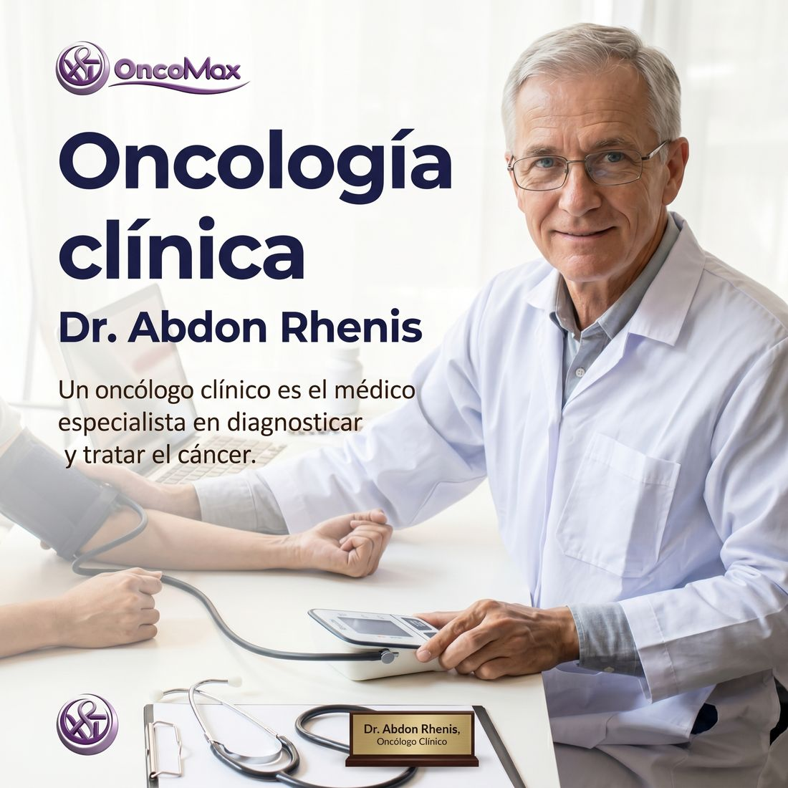

Oncología médica
Dr. Abdón Vargas
Ver biografíaDr. Abdón Vargas
Especialidad: oncología médica.
Historia: médico de la clínica OncoMax, enfocado en orientar a pacientes y familias durante el proceso de atención.
Enfoque: explicar los pasos del tratamiento con palabras claras y acompañar con respeto.